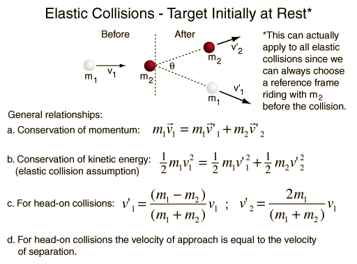
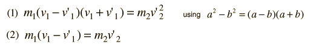

|
Index Collision concepts | |||
|
Go Back |
Head-on Elastic Collisions
To obtain expressions for the velocities after the collision, rewrite the above as: 
|
Index Collision concepts | |||||||||||||
|
Go Back |
Velocities After Collision
may be used along with conservation of momentum equation to obtain expressions for the individual velocities after the collision. |
Index Collision concepts Elastic collisions | ||
|
Go Back |